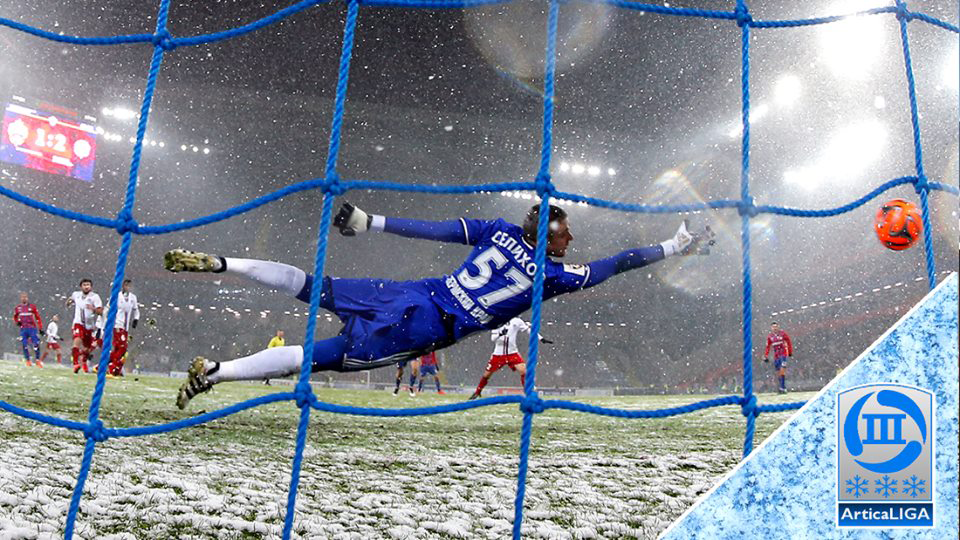

13 ABRIL 2019
1

Início de turno na Terceirona
Dizem que sexta-feira é dia de maldade. Não é para menos: Hoje teremos duelos acirradíssimos. Em meio ao caos das partidas, o Amestris luta para administrar sua hegemonia no campeonato.